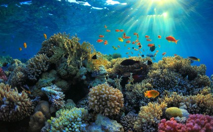
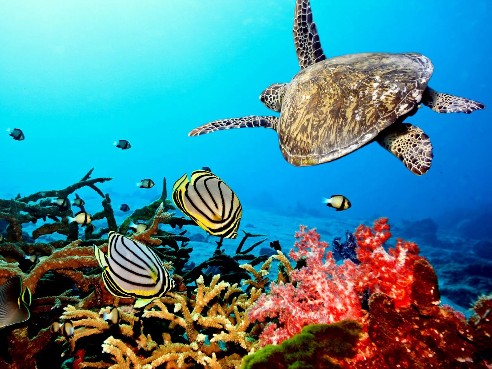
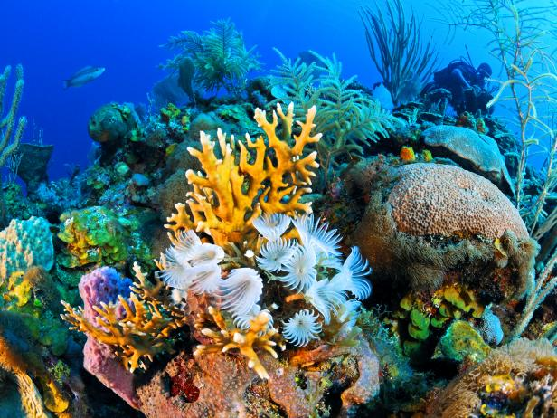
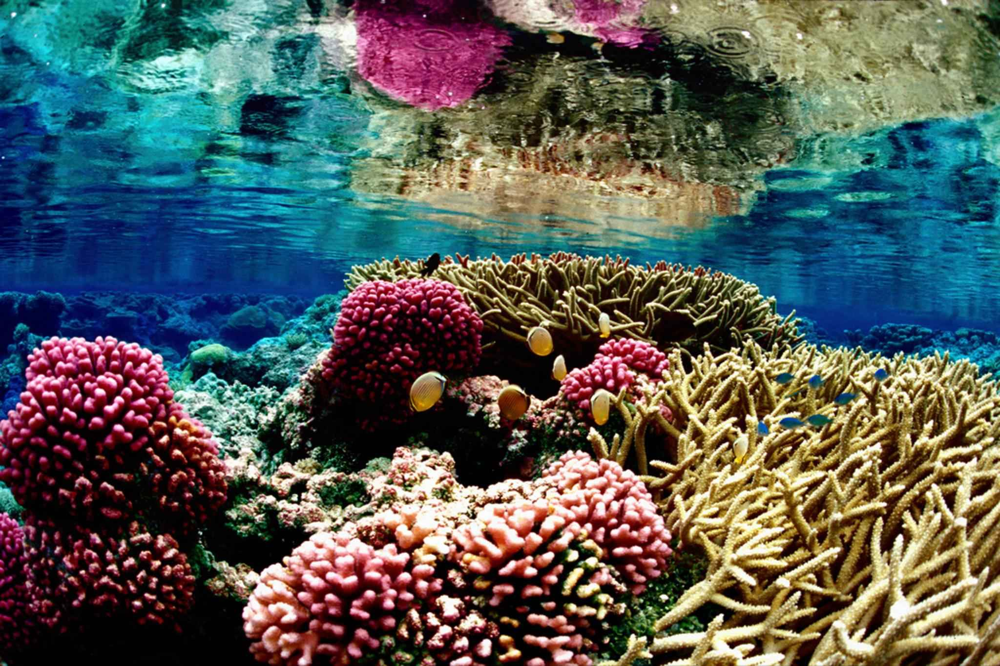

Corals are extremely ancient animals that have developed into modern, reef building forms over the last 25 million years. They appear as solitary forms in the fossil record. They are distinct and complex systems. Corals are anthozoans which are the largest class of organisms to belong to the phylum of Cnidaria. Coral reefs are a diverse underwater ecosystem held together by calcium carbonate structures which have been emitted from corals. Coral reefs are assembled by colonies of small animals found in low nutrient marine waters. Most of these reefs are built by stony corals, consisting of polyps in clusters. Reefs’ optimum growing conditions are in warm, shallow, clear, sunny, and distressed waters.
Coral reefs are one of the most important and diverse ecosystems on planet Earth. They sustain more species per unit than any other marine environment does, including around 4,000 fish species, 800 hard coral species, and many others. Scientists believe there is a possibility of another 1 to 8 million undiscovered species of organisms living near and within coral reefs. Healthy reefs can contribute to local economies through tourism, diving, fishing, hotel, restaurants, and other businesses bases near reef systems. These businesses provide millions of jobs and contribute billions of dollars all over the world. As of 2001, these reefs have been estimated to have an asset value of 7.6 billion dollars. The commercial value of U.S. fisheries from coral reefs alone is above $100 million yearly. In addition to this, coral reefs contribute about 1/4 of the total fish catch, providing critical food resources for tens of millions of people in developing countries. Coral reefs shield adjacent shorelines from wave action and avert erosion, property damage, and loss of life. Reefs also preserve the highly productive wetlands along the coast, as well as ports and harbors, and the economies they support. All around the world, half a billion people are estimated to reside within 100 kilometers of a coral reef and benefit from its production and protection.


Coral reefs are endangered by various threats such as discarded fishing gear, nutrients, sedimentation, bioerosion, hurricanes, coral disease, coral bleaching, sea surface temperatures, ocean acidification, and sea levels rising. Coral reefs face danger from discarded fishing gear such as monofilament fishing lines, sinkers and hooks can entangle coral and corrode polyp tissue leading to coral lesions and mortality. A strong relationship has also been found between the percentages of surface area with fishing lines and the percentage of surface area being dead. The health of coral reefs is threatened by surplus nutrients carried into the ocean from the terrestrial and coastal zone. Discharged sewage, industrial pollutants, as well as surface run off including traces of agricultural fertilizers, animal waste, and sediments from deforested areas transform the natural balance of nutrients in the ocean. This impacts the survival, growth, reproduction and recruitment of corals as well as interaction between coral and other marine organisms. Corals are also negatively affected by sea surface temperatures. High ocean temperatures have been incriminated as an underlying cause of coral bleaching, the loss of coral color due to the expulsion of zooxanthellae symbionts from the corals host tissue in response to environmental perturbation. Coral reefs and zooxanthellae live near their upper thermal tolerance limits, so even a small increase in the temperature of the ocean could have catastrophic effects. Corals can undergo the effects of coral bleaching with temperatures rises as small as 1 to 1.5 degrees Celsius.
Coral reefs can be saved from encountering dangerous threats if we all make simple changes. One way we can help coral reefs is by conserving water, the less water we use, the less runoff and wastewater will pollute the oceans in which coral reefs reside. We can also help coral reefs by reducing pollution. The fossil fuel emissions from cars and industry can lead to ocean warming which causes the bleaching of corals. Another way we can help coral reefs is by using non-chemically enhanced pesticides and fertilizers. No matter where we live in relation to coral reefs, these products end up in the watershed and may ultimately impact the waters that bear coral. If you do live near a beach, try spending a day at a beach cleanup. This protects the corals because over time all trash found on the beach will go back to the sea where it can harm corals by polluting the water. If you’re on a vacation near the beach where there are activities like snorkeling or diving, be sure to not touch the coral as they are very fragile and can be hurt easily. Lastly, spread the word about corals being in danger. The more the people know, the more they will join the cause to protect these coral reefs.
Learn more about how you can help the coral reefs from far away from them
